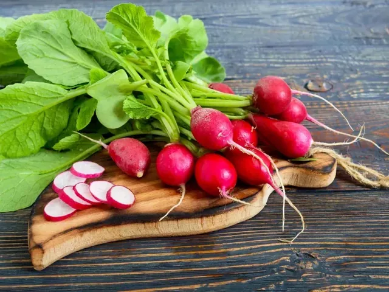

Redkvica je priročen posevek za prve poskuse, ker lahko razmeroma hitro pokaže rezultat. Najbolje jo je načrtovati za hladnejši del leta, ko zemlja ostaja enakomerneje vlažna. Na balkonu zanjo ne potrebujete velike grede, potrebujete pa dovolj globoko posodo in prostor med rastlinami. Sejte malo in večkrat, saj mladi koreni hitro prerastejo velikost, pri kateri so še prijetno hrustljavi.
Spomladanska in jesenska setev
Okvirni termini so zgodnja pomlad ter pozno poletje in jesen. V največji poletni vročini se kakovost korenov pogosto poslabša. Izbiro termina prilagodite lokalnemu vremenu in navodilom sorte.
Sejte neposredno, približno 1–2 cm globoko. Po vzniku pustite približno 3–5 cm med rastlinami. Majhen nov posevek pripravite v presledkih, namesto da bi naenkrat posejali vsa razpoložljiva semena.
Zalivanje in posoda
Za manjši posevek načrtovalnik uporablja najmanj 8 l in 20 cm globine zemlje. Korenom pustite razmik tudi ob robu posode. Voda mora odtekati, substrat pa naj ohranja zmerno vlago.
Sonce ali svetla polsenca sta uporabni legi, zlasti če poleti omejite pregrevanje. Ne čakajte, da rastline vsakokrat močno ovenijo. Izmenjavanje hude suše in obilnega zalivanja lahko poslabša kakovost korenov.
Pobiranje mladih korenov
Pobiranje je lahko mogoče približno štiri do šest tednov po setvi, vendar šteje razvoj rastline. Preverite premer in opis sorte ter najprej izpulite eno redkvico. Ne čakajte nujno na največjo velikost.
Pobrane redkvice operite, odstranite poškodovane dele in shranite na hladnem. Ko posevek pospravite, odstranite ostanke in ocenite zemljo pred naslednjo setvijo. Ponovna setev sredi vročinskega vala ni vedno smiselna.
Informativni vodnik za osrednjo Slovenijo. Termine, velikost posode in razmike prilagodite sorti, vremenu in navodilom dobavitelja. Podatki niso napoved dejanskega datuma pobiranja.
Pogosta vprašanja
Zakaj rastejo listi, korena pa skoraj ni?
Preverite gostoto posevka, svetlobo, vročino in gnojenje. Pregosta setev in neustrezne razmere lahko zavrejo oblikovanje uporabnega korena.
Ali moram redkvico presajati?
Ne. Za običajen manjši posevek jo sejte neposredno v gredo ali končno posodo in po vzniku razredčite.